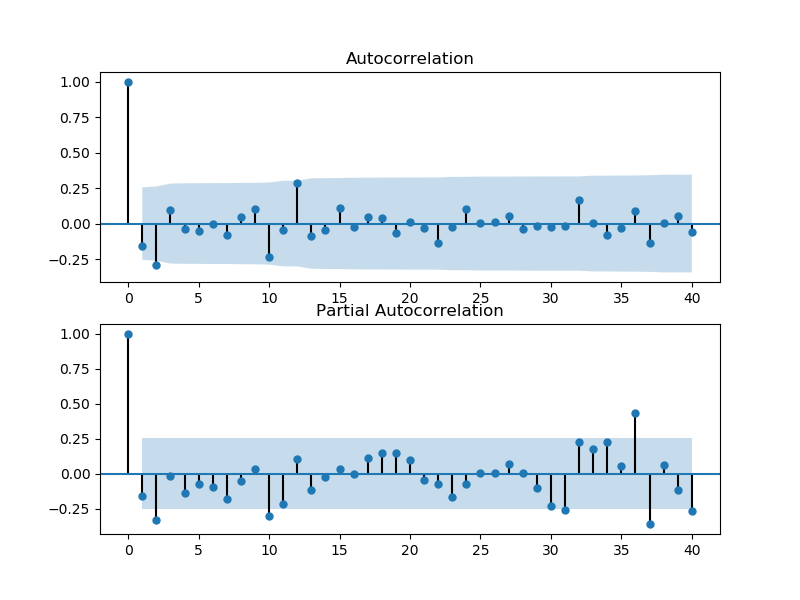
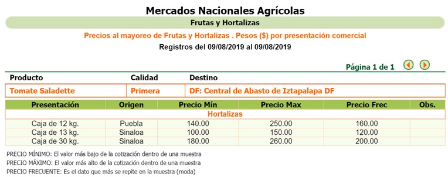
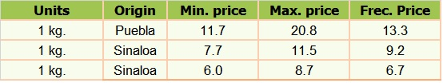

Background
The purpose of this analysis is to predict the price of tomato (saladette, the red one..) in Mexico City, which is one of the most consumed products locally and is also exported overseas. The model used for this time series prediction is ARIMA since the data we have is a time series. This dataset contains the monthly average prices of basic food products for Mexico from january 2011 to july 2018, gathered by INEGI from publishments on the Official Federation Journal. Total observations are 91, this is important since ARIMA model, according to Box and Jenkins, requires a minimum of 50.
Implementation
Since for time series it is better to consider full periods, in this case a full year, the months for 2018 were excluded since we only have till july. The rest of the dataset comprising january-2011 to december-2017 was split in a 70%-30% proportion.
As per the plots below, autocorrelation is significant at the 1st and 3rd lag as per partial correlation is significant at the 1st and 3rd lags and also at the 11th and close to the 36th and 37th lag.

After trying several models, the best one turned to be ARIMA (3,1,1) with a MSE (Mean Squared Error) of 17.79 equivalent to +-4.22MXN per kg.
Results
The plotted real and predicted values look as follows.
The plot looks fairly good in the first part as it follows the changes in price in a similar way but with a delay of one period. The predictions made outside the iterations and retrainment with the test-dataset are trying to follow the upward trend however they are failing to catch the ups and downs.
So, what is tomato's price today?
According to SNIMM (Sistema Nacional de Información e Integración de Mercados) the wholesale price is the following.

Meaning,

The retail price is usually higher and may vary from store.
Further analysis
See the code >> here